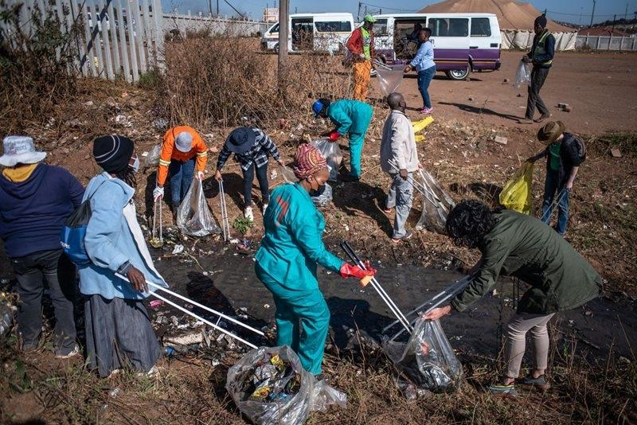
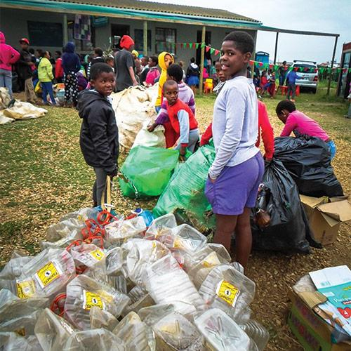
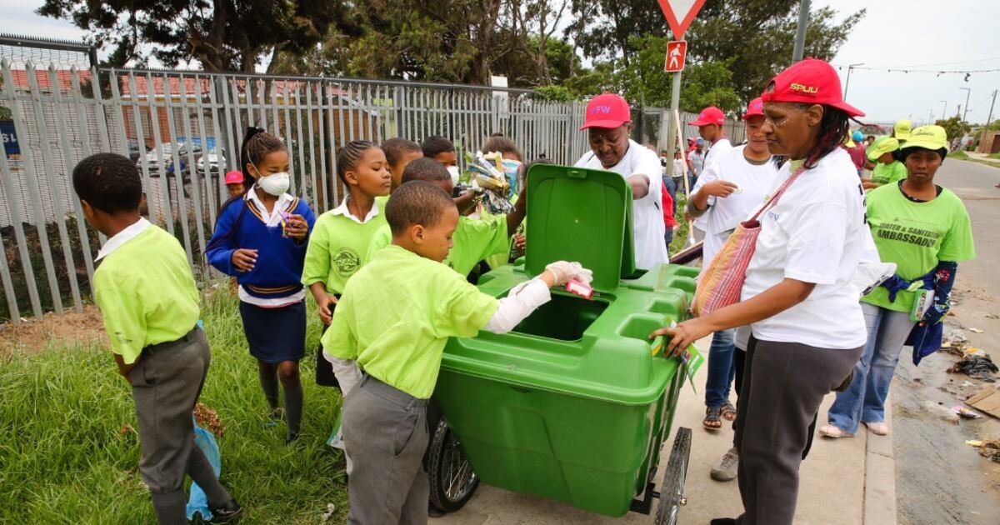
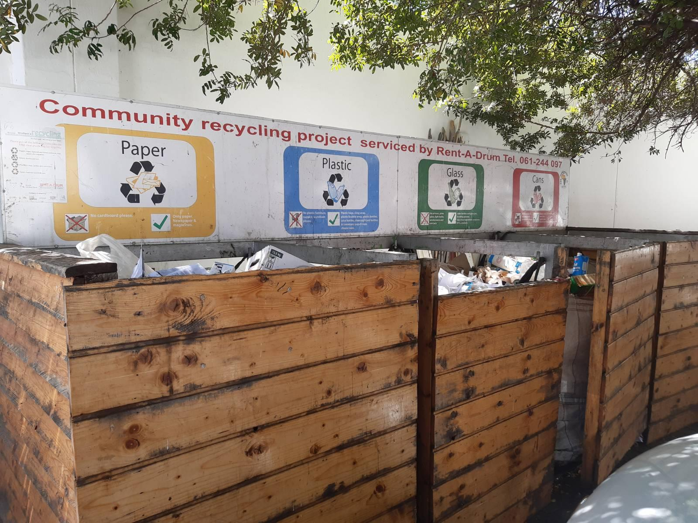

Our Environmental Programmes
Karabo Green Initiative develops community-focused programmes designed to improve environmental awareness and encourage practical action.

Community Clean-Up Programme
Our Community Clean-Up Programme encourages residents and volunteers to work together to improve public spaces by collecting litter and promoting responsible waste disposal.
Programme Activities
- Community litter collection
- Public awareness activities
- Waste separation education
- Community environmental discussions

Recycling Awareness Programme
The Recycling Awareness Programme teaches community members about reducing waste, reusing suitable items and separating recyclable materials.
Key Topics
- Understanding recycling
- Separating recyclable materials
- Reducing household waste
- Reusing suitable materials
- Responsible waste disposal

School Environmental Programme
The School Environmental Programme introduces learners to environmental responsibility through educational activities, discussions and practical projects.
Learning Areas
- Environmental responsibility
- Waste reduction
- Recycling
- Community cleanliness
- Conservation

Green Household Programme
This programme provides households with practical information about reducing waste and making environmentally responsible choices at home.
- Reduce unnecessary purchases.
- Reuse suitable household items.
- Separate recyclable materials.
- Avoid littering.
- Dispose of waste responsibly.

Environmental Workshops
Our workshops provide communities with opportunities to learn about environmental challenges and discuss practical solutions.
Workshop Topics
- Waste management
- Recycling
- Sustainable living
- Environmental conservation
- Community participation
Interested in a Programme?
Contact Karabo Green Initiative to learn more about our programmes or discuss how you can participate.
Make an Enquiry